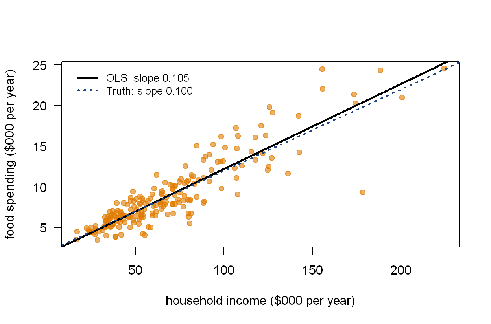
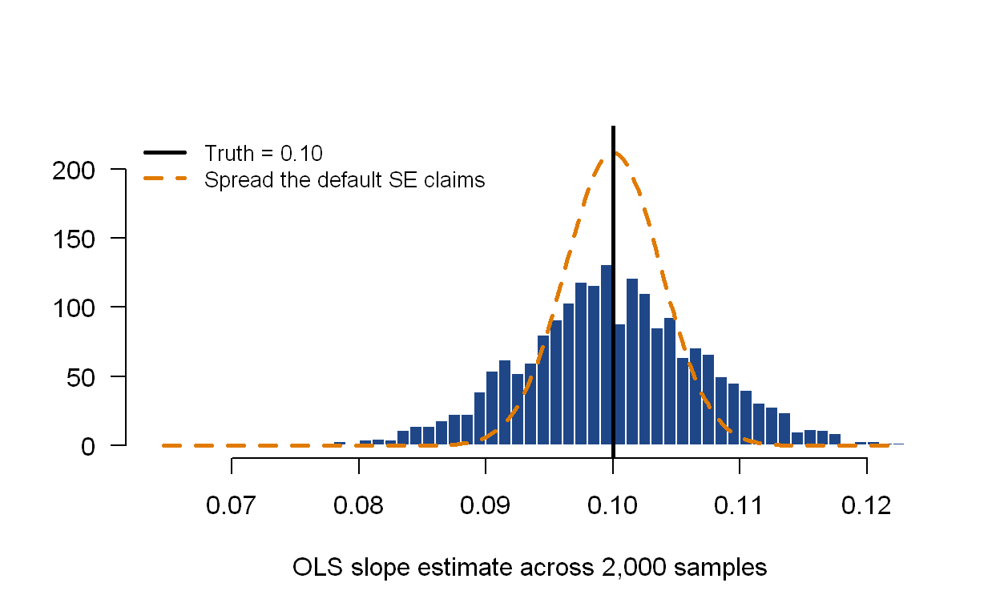
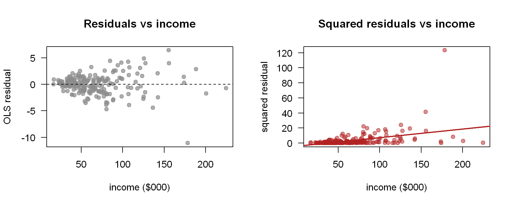
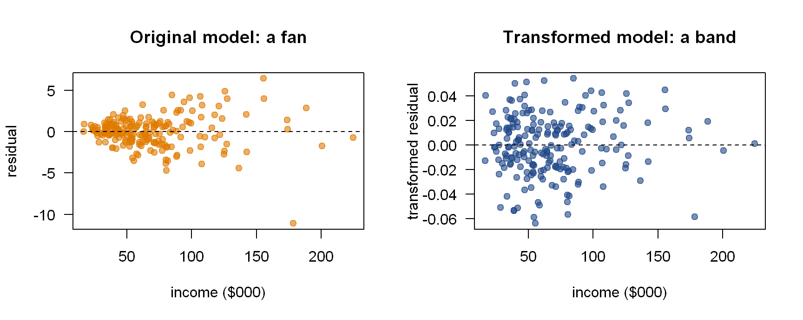
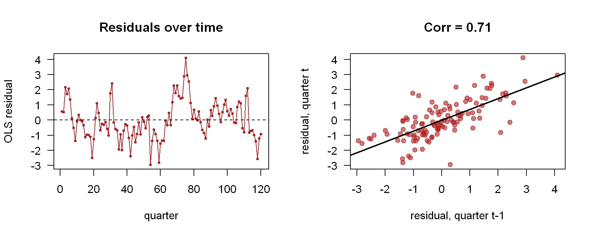

rm(list = ls())
packages <- c(
"AER", # loads sandwich (vcovHC, NeweyWest) and lmtest (coeftest, bptest, bgtest, dwtest)
"nlme", # gls() with AR(1) errors
"knitr" # kable() tables
)
missing <- packages[!packages %in% rownames(installed.packages())]
if (length(missing) > 0) install.packages(missing)
invisible(lapply(packages, library, character.only = TRUE))
col_blue <- "#1F4788"
col_orange <- "#E07B00"
col_grey <- "grey55"
se2 <- function(V) sqrt(V[2, 2]) # SE of the slope from a vcov matrixHeteroskedasticity, Serial Correlation, and GLS
Companion Notebook
ECONGA-1001.001: Applied Statistics and Econometrics I
New York University
What This Notebook Covers
Assumption A4 says the errors all have the same variance and are uncorrelated with each other. When it fails, OLS is still unbiased, but it misjudges its own precision and treats noisy and precise observations alike. Robust standard errors fix the first problem; generalized least squares (GLS) fixes both, if we know the structure of the noise. Every section below is a version of that idea.
- What A4 failure does, and what it doesn’t: a simulated Engel curve
- Detecting heteroskedasticity: residual plots, Breusch–Pagan, White
- Robust standard errors: the sandwich, by hand
- GLS and weighted least squares: the transformation, FGLS, and wrong weights
- Serial correlation: detection, Newey–West, and Prais–Winsten FGLS
Both examples are simulated, so we know the true data generating process (DGP) and can check every estimator and every standard error against the truth. They use the same functions and seeds as the lecture, so the numbers match the slides. Where the lecture states a formula, this notebook computes it by hand and checks it against the R function you would use in practice.
1 Setup
2 Part 1. What A4 Failure Does - and Doesn’t
2.1 A simulated Engel curve
Food spending and income (both in $000 per year) across \(N = 200\) households:
\[\text{food}_i = 2 + 0.10\,\text{income}_i + \varepsilon_i, \qquad \text{sd}(\varepsilon_i \mid \text{income}_i) = 0.025 \times \text{income}_i\]
The true slope is 0.10: ten cents of each extra dollar goes to food. The noise grows with income - poor households all spend about the same on food; rich households differ a lot. That is heteroskedasticity.
make_engel <- function(n = 200, sd_slope = 0.025, seed = 2026) {
if (!is.null(seed)) set.seed(seed)
income <- round(exp(rnorm(n, log(60), 0.5)), 1) # household income, median ~ $60k
e <- rnorm(n, 0, sd_slope * income) # noise grows with income
food <- 2 + 0.10 * income + e
data.frame(income, food)
}
eng <- make_engel()
head(eng)2.2 OLS looks fine
ols <- lm(food ~ income, data = eng)
coef(summary(ols)) Estimate Std. Error t value Pr(>|t|)
(Intercept) 1.736480 0.28978967 5.992209 9.624933e-09
income 0.104654 0.00375775 27.850186 2.092202e-70plot(eng$income, eng$food, pch = 19, col = adjustcolor(col_orange, 0.6), las = 1,
xlab = "household income ($000 per year)", ylab = "food spending ($000 per year)")
abline(ols, lwd = 2.5)
abline(a = 2, b = 0.10, lty = 3, lwd = 2, col = col_blue)
legend("topleft", bg = "white", box.col = NA, inset = 0.015, cex = 0.85, lty = c(1, 3), lwd = c(2.5, 2),
col = c("black", col_blue), c(sprintf("OLS: slope %.3f", coef(ols)[2]), "Truth: slope 0.100"))
The slope, 0.105, is close to the truth. The question is whether the reported standard error, 0.0038, is right.
2.3 Unbiased, but the default standard error is wrong
Draw 2,000 new samples and run OLS on each. Along the way we store several other estimators and standard errors that later parts of the notebook use, so the simulation runs only once.
set.seed(7)
mc_e <- t(replicate(2000, {
d <- make_engel(seed = NULL)
o <- lm(food ~ income, data = d)
wl <- lm(food ~ income, data = d, weights = 1 / income^2) # WLS, correct weights (Part 4)
wr <- lm(food ~ income, data = d, weights = 1 / income) # WLS, wrong weights (Part 4)
c(b = coef(o)[[2]], se = se2(vcov(o)), hc1 = se2(vcovHC(o, "HC1")), hc3 = se2(vcovHC(o, "HC3")),
bw = coef(wl)[[2]], sew = se2(vcov(wl)), sew_hc = se2(vcovHC(wl, "HC1")),
bwr = coef(wr)[[2]], sewr = se2(vcov(wr)), sewr_hc = se2(vcovHC(wr, "HC1")))
}))
rej <- function(b, se, truth = 0.10) mean(abs((b - truth) / se) > 1.96) # share rejecting the TRUE null at 5%
knitr::kable(data.frame(
Quantity = c("Average OLS estimate", "Actual SD of the estimates", "Average default SE",
"Rejection rate of the true H0 (default SE)"),
Value = c(sprintf("%.4f", mean(mc_e[, "b"])), sprintf("%.4f", sd(mc_e[, "b"])),
sprintf("%.4f", mean(mc_e[, "se"])), sprintf("%.1f%%", 100 * rej(mc_e[, "b"], mc_e[, "se"])))))| Quantity | Value |
|---|---|
| Average OLS estimate | 0.1000 |
| Actual SD of the estimates | 0.0073 |
| Average default SE | 0.0038 |
| Rejection rate of the true H0 (default SE) | 31.2% |
OLS is centred on 0.10 - unbiased, since that needs only A3. But the default SE is about half the actual spread of the estimates, so a 5% test of the true null rejects 31% of the time.
h <- hist(mc_e[, "b"], breaks = 50, plot = FALSE)
xs <- seq(min(mc_e[, "b"]), max(mc_e[, "b"]), length.out = 300)
claimed <- 2000 * diff(h$breaks)[1] * dnorm(xs, 0.10, mean(mc_e[, "se"]))
plot(h, col = col_blue, border = "white", las = 1, main = "", ylab = "", ylim = c(0, max(claimed) * 1.05),
xlab = "OLS slope estimate across 2,000 samples")
lines(xs, claimed, lwd = 2.5, lty = 2, col = col_orange)
abline(v = 0.10, lwd = 2.5)
legend("topleft", bty = "n", cex = 0.85, lty = c(1, 2), lwd = 2.5, col = c("black", col_orange),
c("Truth = 0.10", "Spread the default SE claims"))
2.4 Why: the variance formula with unequal variances
With one regressor, conditional on the incomes,
\[\text{Var}(\hat{\beta}_1 \mid \mathbf{X}) = \frac{\sum_i (x_i - \bar{x})^2\,\sigma_i^2}{\left[\sum_i (x_i - \bar{x})^2\right]^2} \qquad \text{vs. the default} \qquad \frac{\sigma^2}{\sum_i (x_i - \bar{x})^2}.\]
In the simulation we know every \(\sigma_i\), so we can evaluate both formulas for our 200 households - and check them by redrawing only the errors, holding the incomes fixed:
x <- eng$income
s2 <- (0.025 * x)^2 # true sigma_i^2
dx <- x - mean(x)
true_sd <- sqrt(sum(dx^2 * s2) / sum(dx^2)^2)
default_sd <- sqrt(mean(s2) / sum(dx^2)) # what the default formula targets
set.seed(1)
X <- cbind(1, x)
b_fixedX <- replicate(5000, lm.fit(X, 2 + 0.10 * x + rnorm(length(x), 0, 0.025 * x))$coefficients[2])
c(`true SD (formula)` = true_sd, `SD across redraws` = sd(b_fixedX), `default formula` = default_sd)true SD (formula) SD across redraws default formula
0.006850279 0.006875769 0.003788448 The formula matches the simulation. The default is too small because the noise is largest exactly where \(x\) is far from its mean - the observations that pin down a slope.
3 Part 2. Detecting Heteroskedasticity
3.1 Look first
e <- resid(ols)
par(mfrow = c(1, 2))
plot(eng$income, e, pch = 19, col = adjustcolor(col_grey, 0.7), las = 1,
xlab = "income ($000)", ylab = "OLS residual", main = "Residuals vs income")
abline(h = 0, lty = 2)
plot(eng$income, e^2, pch = 19, col = adjustcolor("firebrick", 0.5), las = 1,
xlab = "income ($000)", ylab = "squared residual", main = "Squared residuals vs income")
abline(lm(e^2 ~ eng$income), lwd = 2, col = "firebrick")
3.2 Breusch–Pagan by hand
Regress the squared residuals on the variables suspected of driving the variance; \(LM = N \cdot R^2 \sim \chi^2_m\) under homoskedasticity.
aux <- lm(I(e^2) ~ income, data = eng)
LM <- nrow(eng) * summary(aux)$r.squared
c(`N R^2 by hand` = LM, `bptest()` = unname(bptest(ols)$statistic),
`p-value` = pchisq(LM, df = 1, lower.tail = FALSE))N R^2 by hand bptest() p-value
3.362695e+01 3.362695e+01 6.676131e-09 bptest() computes exactly this \(N \cdot R^2\) statistic: Koenker’s studentized version, which does not need normal errors. Breusch and Pagan’s original statistic divides by \(2\hat\sigma^4\) instead and relies on normality:
s2hat <- mean(e^2)
LM_orig <- sum((fitted(aux) - mean(e^2))^2) / (2 * s2hat^2) # explained SS of e^2 / (2 sigma^4)
c(`original BP by hand` = LM_orig, `bptest(studentize = FALSE)` = unname(bptest(ols, studentize = FALSE)$statistic)) original BP by hand bptest(studentize = FALSE)
127.959 127.959 3.3 White’s test
White’s test adds squares and cross-products of the regressors, so it needs no guess about the form. With one regressor that is just income and income²:
aux_w <- lm(I(e^2) ~ income + I(income^2), data = eng)
c(`N R^2 by hand` = nrow(eng) * summary(aux_w)$r.squared,
`bptest(~ income + income^2)` = unname(bptest(ols, ~ income + I(income^2), data = eng)$statistic)) N R^2 by hand bptest(~ income + income^2)
34.21051 34.21051 Both tests reject decisively here. Remember the limits: White’s test also rejects when the functional form is wrong, and failing to reject does not prove homoskedasticity.
4 Part 3. Robust Standard Errors
4.1 The sandwich by hand
\[\widehat{\text{Var}}_{HC0}(\hat{\boldsymbol\beta}) = \underbrace{(\mathbf{X}'\mathbf{X})^{-1}}_{\text{bread}}\ \underbrace{\Big(\sum_i e_i^2\,\mathbf{x}_i\mathbf{x}_i'\Big)}_{\text{meat}}\ \underbrace{(\mathbf{X}'\mathbf{X})^{-1}}_{\text{bread}}\]
The meat is a \(k \times k\) matrix - here \(2 \times 2\), symmetric, so \(k(k+1)/2 = 3\) distinct numbers - even though \(\boldsymbol\Sigma\) itself is \(200 \times 200\).
X <- model.matrix(ols)
n <- nrow(X); k <- ncol(X)
bread <- solve(crossprod(X))
meat <- crossprod(X * e) # = sum_i e_i^2 x_i x_i'
V_hc0 <- bread %*% meat %*% bread
V_hc1 <- V_hc0 * n / (n - k)
h <- hatvalues(ols) # leverage h_ii
V_hc3 <- bread %*% crossprod(X * (e / (1 - h))) %*% bread
knitr::kable(data.frame(
Version = c("Default", "HC0", "HC1", "HC3"),
`By hand` = sprintf("%.5f", c(se2(sigma(ols)^2 * bread), se2(V_hc0), se2(V_hc1), se2(V_hc3))),
`sandwich::vcovHC` = sprintf("%.5f", c(se2(vcov(ols)), se2(vcovHC(ols, "HC0")),
se2(vcovHC(ols, "HC1")), se2(vcovHC(ols, "HC3")))),
check.names = FALSE))| Version | By hand | sandwich::vcovHC |
|---|---|---|
| Default | 0.00376 | 0.00376 |
| HC0 | 0.00640 | 0.00640 |
| HC1 | 0.00643 | 0.00643 |
| HC3 | 0.00668 | 0.00668 |
HC1 is Stata’s , robust; HC3 is the default of R’s vcovHC() and behaves better in small samples. The coefficient never changes - only its standard error. In practice:
coeftest(ols, vcov = vcovHC(ols, type = "HC1"))
t test of coefficients:
Estimate Std. Error t value Pr(>|t|)
(Intercept) 1.7364803 0.3635327 4.7767 3.463e-06 ***
income 0.1046540 0.0064289 16.2787 < 2.2e-16 ***
---
Signif. codes: 0 '***' 0.001 '**' 0.01 '*' 0.05 '.' 0.1 ' ' 14.2 Does it work? Rejection rates
knitr::kable(data.frame(
`Standard error` = c("Default", "HC1", "HC3"),
`Rejects true H0 (target 5%)` = sprintf("%.1f%%", 100 * c(rej(mc_e[, "b"], mc_e[, "se"]),
rej(mc_e[, "b"], mc_e[, "hc1"]),
rej(mc_e[, "b"], mc_e[, "hc3"]))),
`Average SE` = sprintf("%.4f", c(mean(mc_e[, "se"]), mean(mc_e[, "hc1"]), mean(mc_e[, "hc3"]))),
check.names = FALSE))| Standard error | Rejects true H0 (target 5%) | Average SE |
|---|---|---|
| Default | 31.2% | 0.0038 |
| HC1 | 8.9% | 0.0065 |
| HC3 | 7.3% | 0.0071 |
The actual SD of the estimates is 0.0073: robust SEs now roughly match it. But the estimates themselves are exactly as spread out as before. Robust SEs fix inference, not efficiency.
5 Part 4. GLS and Weighted Least Squares
5.1 The idea: two scales
Scale A is precise (\(\sigma_A = 1\)), scale B is noisy (\(\sigma_B = 3\)). Weigh the same 10-unit object many times:
set.seed(3)
A <- 10 + rnorm(1e5, 0, 1); B <- 10 + rnorm(1e5, 0, 3)
c(`only A` = var(A), `simple average (OLS-like)` = var((A + B) / 2),
`weights 0.9 / 0.1 (GLS-like)` = var(0.9 * A + 0.1 * B)) only A simple average (OLS-like)
1.0081851 2.5097281
weights 0.9 / 0.1 (GLS-like)
0.9099199 Equal weighting (theory: 2.5) is worse than ignoring scale B; weighting by \(1/\sigma^2\) (theory: 0.9) beats both.
5.2 WLS = OLS on transformed data
With \(\text{sd}(\varepsilon_i) \propto \text{income}_i\), divide every variable - including the constant - by income. The transformed error has constant variance:
eng$food_s <- eng$food / eng$income
eng$const_s <- 1 / eng$income
eng$income_s <- eng$income / eng$income # = 1
by_hand <- lm(food_s ~ 0 + const_s + income_s, data = eng)
wls <- lm(food ~ income, data = eng, weights = 1 / income^2) # weights = 1 / VARIANCE
rbind(`OLS on transformed data` = coef(by_hand), `lm(weights = 1/income^2)` = coef(wls)) const_s income_s
OLS on transformed data 2.083491 0.09875226
lm(weights = 1/income^2) 2.083491 0.09875226Note the roles flip in the transformed regression: the slope 0.10 is now the coefficient on the constant-like income_s, and the intercept 2 is the coefficient on \(1/\text{income}\). And note lm() weights are one over the variance, not one over the standard deviation.
par(mfrow = c(1, 2))
plot(eng$income, resid(ols), pch = 19, col = adjustcolor(col_orange, 0.6), las = 1,
xlab = "income ($000)", ylab = "residual", main = "Original model: a fan")
abline(h = 0, lty = 2)
plot(eng$income, resid(by_hand), pch = 19, col = adjustcolor(col_blue, 0.6), las = 1,
xlab = "income ($000)", ylab = "transformed residual", main = "Transformed model: a band")
abline(h = 0, lty = 2)
5.3 The GLS formula by hand
\[\hat{\boldsymbol\beta}_{GLS} = (\mathbf{X}'\boldsymbol\Omega^{-1}\mathbf{X})^{-1}\mathbf{X}'\boldsymbol\Omega^{-1}\mathbf{y}, \qquad \widehat{\text{Var}}(\hat{\boldsymbol\beta}_{GLS}) = \hat\sigma^2(\mathbf{X}'\boldsymbol\Omega^{-1}\mathbf{X})^{-1}, \qquad \hat\sigma^2 = \frac{1}{N-k}\sum_i \frac{(y_i - \mathbf{x}_i'\hat{\boldsymbol\beta})^2}{\omega_i}\]
y <- eng$food
Oinv <- diag(1 / eng$income^2) # Omega^{-1}, with omega_i = income_i^2
XOX <- t(X) %*% Oinv %*% X
b_gls <- solve(XOX, t(X) %*% Oinv %*% y)
s2_gls <- sum((y - X %*% b_gls)^2 / eng$income^2) / (n - k)
rbind(`GLS formula` = c(b_gls, SE = sqrt(s2_gls * solve(XOX)[2, 2])),
`lm(weights)` = c(coef(wls), SE = se2(vcov(wls)))) SE
GLS formula 2.083491 0.09875226 0.003864685
lm(weights) 2.083491 0.09875226 0.0038646855.4 Feasible GLS: estimate the weights
In practice we don’t know \(\omega_i\). Harvey’s model assumes \(\text{Var}(\varepsilon_i) = \sigma^2 \exp(\gamma \log \text{income}_i)\); with \(\text{sd} \propto \text{income}\), the true \(\gamma = 2\).
aux_h <- lm(log(resid(ols)^2) ~ log(income), data = eng) # step 2: skedastic regression
fgls <- lm(food ~ income, data = eng, weights = 1 / exp(fitted(aux_h))) # steps 3-4
c(`gamma-hat (truth 2)` = coef(aux_h)[[2]])gamma-hat (truth 2)
2.13646 knitr::kable(data.frame(
Estimator = c("OLS (HC1 SE)", "WLS, true weights", "FGLS, estimated weights"),
Slope = sprintf("%.4f", c(coef(ols)[2], coef(wls)[2], coef(fgls)[2])),
SE = sprintf("%.4f", c(se2(vcovHC(ols, "HC1")), se2(vcov(wls)), se2(vcov(fgls))))))| Estimator | Slope | SE |
|---|---|---|
| OLS (HC1 SE) | 0.1047 | 0.0064 |
| WLS, true weights | 0.0988 | 0.0039 |
| FGLS, estimated weights | 0.0982 | 0.0039 |
The intercept of the skedastic regression is off by a constant (the mean of \(\log \chi^2_1\) is not zero), but that rescales every weight by the same factor, which changes nothing.
5.5 Correct weights, wrong weights, and OLS
From the 2,000 samples in Part 1:
knitr::kable(data.frame(
Estimator = c("OLS", "WLS, correct weights 1/income^2", "WLS, wrong weights 1/income"),
Mean = sprintf("%.4f", colMeans(mc_e[, c("b", "bw", "bwr")])),
`SD of estimates` = sprintf("%.4f", apply(mc_e[, c("b", "bw", "bwr")], 2, sd)),
`Rejects true H0 (default SE)` = sprintf("%.1f%%", 100 * c(rej(mc_e[, "b"], mc_e[, "se"]),
rej(mc_e[, "bw"], mc_e[, "sew"]),
rej(mc_e[, "bwr"], mc_e[, "sewr"]))),
`Rejects true H0 (HC1 robust SE)` = sprintf("%.1f%%", 100 * c(rej(mc_e[, "b"], mc_e[, "hc1"]),
rej(mc_e[, "bw"], mc_e[, "sew_hc"]),
rej(mc_e[, "bwr"], mc_e[, "sewr_hc"]))),
check.names = FALSE))| Estimator | Mean | SD of estimates | Rejects true H0 (default SE) | Rejects true H0 (HC1 robust SE) |
|---|---|---|---|---|
| OLS | 0.1000 | 0.0073 | 31.2% | 8.9% |
| WLS, correct weights 1/income^2 | 0.1000 | 0.0037 | 4.8% | 5.1% |
| WLS, wrong weights 1/income | 0.1000 | 0.0046 | 10.8% | 5.9% |
Each rejection column uses that row’s own estimator; the robust column computes HC1 standard errors for the WLS coefficients themselves (vcovHC() works on weighted regressions).
- All three are unbiased: weights that depend only on \(x\) cannot bias the coefficients when \(E[\varepsilon \mid x] = 0\).
- Correct weights halve the spread relative to OLS; wrong weights land in between.
- Wrong weights make the default WLS standard errors wrong; robust SEs repair them. Hence the recipe: WLS/FGLS for efficiency + robust SEs for honesty.
5.6 When the choice of weights does change the answer
The “no bias” result needs a correct regression model and weights built from \(x\) alone. Two ways it fails:
set.seed(3)
mc_bias <- t(replicate(2000, {
d <- make_engel(seed = NULL)
# (a) misspecified model: the food share of extra income rises with income
d$food_het <- 2 + (0.06 + 0.0006 * d$income) * d$income + (d$food - 2 - 0.10 * d$income)
c(`(a) OLS` = coef(lm(food_het ~ income, data = d))[[2]],
`(a) WLS 1/income^2` = coef(lm(food_het ~ income, data = d, weights = 1 / income^2))[[2]],
`(a) WLS 1/income` = coef(lm(food_het ~ income, data = d, weights = 1 / income))[[2]],
# (b) weights built from y instead of x (correct model, truth 0.10)
`(b) WLS 1/food^2` = coef(lm(food ~ income, data = d, weights = 1 / food^2))[[2]])
}))
knitr::kable(data.frame(`Average estimate` = sprintf("%.3f", colMeans(mc_bias)), check.names = FALSE))| Average estimate |
|---|
| 0.177 |
| 0.134 |
| 0.153 |
| 0.086 |
- (a) With no single slope, OLS and each WLS estimate a different weighted average of the households’ slopes. OLS’s target - the best linear approximation to the true relationship - is the only one that doesn’t depend on a model of the variance.
- (b) Weights built from \(y\) depend on the error, so they bias the estimate even when the model is right.
- (c) In time series, AR(1) FGLS needs strict exogeneity (Part 5).
6 Part 5. Serial Correlation
6.1 A simulated consumption function
Quarterly consumption and income over \(T = 120\) quarters:
\[\text{cons}_t = 5 + 0.8\,\text{income}_t + \varepsilon_t, \qquad \varepsilon_t = 0.7\,\varepsilon_{t-1} + u_t\]
Consumption shocks persist (an AR(1) error), and income fluctuations persist too (\(\rho_x = 0.8\)).
make_cons <- function(T = 120, rho = 0.7, rho_y = 0.8, seed = 1990) {
if (!is.null(seed)) set.seed(seed)
y <- e <- numeric(T)
y[1] <- rnorm(1, 0, 4 / sqrt(1 - rho_y^2)); e[1] <- rnorm(1, 0, 1 / sqrt(1 - rho^2))
for (t in 2:T) {
y[t] <- rho_y * y[t - 1] + rnorm(1, 0, 4) # income fluctuations persist
e[t] <- rho * e[t - 1] + rnorm(1, 0, 1) # consumption shocks persist
}
income <- 100 + y
data.frame(quarter = 1:T, income, cons = 5 + 0.8 * income + e)
}
cs <- make_cons()
ols_c <- lm(cons ~ income, data = cs)
e_c <- resid(ols_c); TT <- nrow(cs)
coef(summary(ols_c)) Estimate Std. Error t value Pr(>|t|)
(Intercept) 8.0564543 1.54938589 5.199773 8.490381e-07
income 0.7648968 0.01609709 47.517701 8.765658e-79par(mfrow = c(1, 2))
plot(cs$quarter, e_c, type = "o", pch = 19, cex = 0.5, col = "firebrick", las = 1,
xlab = "quarter", ylab = "OLS residual", main = "Residuals over time")
abline(h = 0, lty = 2)
plot(e_c[-TT], e_c[-1], pch = 19, col = adjustcolor("firebrick", 0.6), las = 1,
xlab = "residual, quarter t-1", ylab = "residual, quarter t",
main = sprintf("Corr = %.2f", cor(e_c[-1], e_c[-TT])))
abline(lm(e_c[-1] ~ e_c[-TT]), lwd = 2)
6.2 Less information than it looks
When both the regressor and the error are AR(1), the true variance of the OLS slope is approximately \((1 + \rho_x\rho)/(1 - \rho_x\rho)\) times what the default formula says. With 2,000 simulated samples (this simulation also stores the estimators used later in this part):
prais_winsten <- function(d, rho = NULL) {
o <- lm(cons ~ income, data = d); e <- resid(o); Tn <- nrow(d)
if (is.null(rho)) rho <- coef(lm(e[-1] ~ 0 + e[-Tn]))[[1]] # step 2: estimate rho
s <- sqrt(1 - rho^2)
ystar <- c(s * d$cons[1], d$cons[-1] - rho * d$cons[-Tn]) # step 3: quasi-difference
xstar <- c(s * d$income[1], d$income[-1] - rho * d$income[-Tn])
cstar <- c(s, rep(1 - rho, Tn - 1)) # the transformed constant
list(rho = rho, fit = lm(ystar ~ 0 + cstar + xstar)) # step 4: OLS
}
L_nw <- floor(0.75 * TT^(1/3)) # rule of thumb: 3 here
set.seed(11)
mc_c <- t(replicate(2000, {
d <- make_cons(seed = NULL); o <- lm(cons ~ income, data = d); p <- prais_winsten(d)
c(b = coef(o)[[2]], se = se2(vcov(o)),
nw = se2(NeweyWest(o, lag = L_nw, prewhite = FALSE)),
nw8 = se2(NeweyWest(o, lag = 8, prewhite = FALSE)),
nwau = se2(NeweyWest(o)), # package default: automatic lag, prewhitening
bp = coef(p$fit)[["xstar"]], sep = se2(vcov(p$fit)))
}))
c(`mean OLS slope (truth 0.8)` = mean(mc_c[, "b"]),
`(actual SD / avg default SE)^2` = (sd(mc_c[, "b"]) / mean(mc_c[, "se"]))^2,
`formula (1 + 0.8*0.7)/(1 - 0.8*0.7)` = (1 + 0.56) / (1 - 0.56)) mean OLS slope (truth 0.8) (actual SD / avg default SE)^2
0.7991894 3.4007143
formula (1 + 0.8*0.7)/(1 - 0.8*0.7)
3.5454545 So 120 correlated quarters carry about as much information as 34 independent ones. A 5% test of the true null with the default SE rejects 28% of the time.
6.3 Detecting it: Breusch–Godfrey and Durbin–Watson, by hand
Breusch–Godfrey: regress \(e_t\) on the regressors and \(p\) lags of \(e_t\) (missing lags set to 0); \(LM = T \cdot R^2 \sim \chi^2_p\).
bg_by_hand <- function(e, x, p) {
lags <- sapply(1:p, function(l) c(rep(0, l), head(e, -l)))
length(e) * summary(lm(e ~ x + lags))$r.squared
}
dw_by_hand <- sum(diff(e_c)^2) / sum(e_c^2)
knitr::kable(data.frame(
Test = c("Breusch-Godfrey, p = 1", "Breusch-Godfrey, p = 4", "Durbin-Watson"),
`By hand` = sprintf("%.3f", c(bg_by_hand(e_c, cs$income, 1), bg_by_hand(e_c, cs$income, 4), dw_by_hand)),
`lmtest` = sprintf("%.3f", c(bgtest(ols_c, order = 1)$statistic, bgtest(ols_c, order = 4)$statistic,
dwtest(ols_c)$statistic)),
check.names = FALSE))| Test | By hand | lmtest |
|---|---|---|
| Breusch-Godfrey, p = 1 | 60.511 | 60.511 |
| Breusch-Godfrey, p = 4 | 62.191 | 62.191 |
| Durbin-Watson | 0.577 | 0.577 |
Durbin–Watson is approximately \(2(1 - \hat\rho)\): here \(2(1 - 0.71) \approx 0.58\). It is only valid with strictly exogenous regressors (for example, no lagged dependent variable); Breusch–Godfrey has no such restriction.
6.4 Fix 1: Newey–West by hand
The meat adds covariances between nearby periods, with Bartlett weights \(w_l = 1 - l/(L+1)\):
\[\hat{\mathbf S} = \sum_t e_t^2\,\mathbf{x}_t\mathbf{x}_t' + \sum_{l=1}^{L} w_l \sum_{t=l+1}^{T} e_t e_{t-l}\left(\mathbf{x}_t\mathbf{x}_{t-l}' + \mathbf{x}_{t-l}\mathbf{x}_t'\right)\]
Xc <- model.matrix(ols_c)
S <- crossprod(Xc * e_c) # l = 0: the White meat
for (l in 1:L_nw) {
G <- crossprod(Xc[(l + 1):TT, , drop = FALSE] * e_c[(l + 1):TT],
Xc[1:(TT - l), , drop = FALSE] * e_c[1:(TT - l)]) # sum_t e_t e_{t-l} x_t x_{t-l}'
S <- S + (1 - l / (L_nw + 1)) * (G + t(G))
}
bread_c <- solve(crossprod(Xc))
c(`by hand` = se2(bread_c %*% S %*% bread_c),
`NeweyWest(lag = 3, prewhite = FALSE)` = se2(NeweyWest(ols_c, lag = L_nw, prewhite = FALSE)),
`default SE` = se2(vcov(ols_c))) by hand NeweyWest(lag = 3, prewhite = FALSE)
0.02670752 0.02670752
default SE
0.01609709 How well does it repair inference?
knitr::kable(data.frame(
`Standard error` = c("Default", sprintf("Newey-West, L = %d", L_nw), "Newey-West, L = 8",
"NeweyWest() defaults (automatic L, prewhitening)"),
`Rejects true H0 (target 5%)` = sprintf("%.1f%%", 100 * c(rej(mc_c[, "b"], mc_c[, "se"], 0.8),
rej(mc_c[, "b"], mc_c[, "nw"], 0.8),
rej(mc_c[, "b"], mc_c[, "nw8"], 0.8),
rej(mc_c[, "b"], mc_c[, "nwau"], 0.8))),
check.names = FALSE))| Standard error | Rejects true H0 (target 5%) |
|---|---|
| Default | 28.0% |
| Newey-West, L = 3 | 16.5% |
| Newey-West, L = 8 | 14.3% |
| NeweyWest() defaults (automatic L, prewhitening) | 9.4% |
Much better than the default, but not 5%: with persistent errors and a persistent regressor, 120 quarters is a short sample for HAC standard errors. The package defaults do noticeably better here (9.4%): prewhitening first removes most of the AR(1) persistence from the residual-regressor products, then applies Newey–West to what is left. The textbook formula with a rule-of-thumb \(L\) is the one to understand; in applied work, NeweyWest(fit) with its defaults is a reasonable choice.
6.5 Fix 2: GLS for AR(1) errors
The transformation matrix. For AR(1) errors, \(\mathbf{C}\) quasi-differences each row and rescales the first by \(\sqrt{1-\rho^2}\). Check that it turns \(\boldsymbol\Sigma\) into \(\sigma_u^2\mathbf{I}\) (with \(\sigma_u = 1\)):
rho <- 0.7
Sigma <- rho^abs(outer(1:TT, 1:TT, "-")) / (1 - rho^2) # Var(eps_t) = 1/(1 - rho^2), sigma_u = 1
C <- diag(TT); C[1, 1] <- sqrt(1 - rho^2)
C[cbind(2:TT, 1:(TT - 1))] <- -rho
c(`max |C Sigma C' - I|` = max(abs(C %*% Sigma %*% t(C) - diag(TT))))max |C Sigma C' - I|
1.110223e-16 GLS with the true \(\rho\) two ways - the matrix formula and the Prais–Winsten transformation - give the same estimate:
y_c <- cs$cons
Si <- solve(Sigma)
b_matrix <- solve(t(Xc) %*% Si %*% Xc, t(Xc) %*% Si %*% y_c)
rbind(`(X' Sigma^-1 X)^-1 X' Sigma^-1 y` = c(b_matrix),
`Prais-Winsten with rho = 0.7` = coef(prais_winsten(cs, rho = 0.7)$fit)) cstar xstar
(X' Sigma^-1 X)^-1 X' Sigma^-1 y 8.647439 0.758673
Prais-Winsten with rho = 0.7 8.647439 0.758673Feasible GLS estimates \(\rho\) from the OLS residuals first. nlme::gls() fits the same model by maximum likelihood:
pw <- prais_winsten(cs)
gl <- gls(cons ~ income, data = cs, correlation = corAR1(form = ~ quarter))
knitr::kable(data.frame(
Estimator = c("OLS + Newey-West", "Prais-Winsten FGLS", "nlme::gls, AR(1)"),
`rho-hat` = c("", sprintf("%.3f", pw$rho), sprintf("%.3f", coef(gl$modelStruct$corStruct, unconstrained = FALSE)[[1]])),
Slope = sprintf("%.3f", c(coef(ols_c)[2], coef(pw$fit)[["xstar"]], coef(gl)[[2]])),
SE = sprintf("%.4f", c(se2(NeweyWest(ols_c, lag = L_nw, prewhite = FALSE)), se2(vcov(pw$fit)),
summary(gl)$tTable[2, 2])),
check.names = FALSE))| Estimator | rho-hat | Slope | SE |
|---|---|---|---|
| OLS + Newey-West | 0.765 | 0.0267 | |
| Prais-Winsten FGLS | 0.711 | 0.759 | 0.0197 |
| nlme::gls, AR(1) | 0.723 | 0.758 | 0.0198 |
Across the 2,000 samples, Prais–Winsten has an SD of 0.0232 against OLS’s 0.0363, and its own standard errors reject the true null 6.6% of the time.
The catch: strict exogeneity. The transformed regressor \(x_t - \rho x_{t-1}\) contains last quarter’s income, so the error must be unrelated to past, present, and future regressors. That fails, for example, with a lagged dependent variable, and then FGLS is inconsistent. OLS with Newey–West standard errors needs only contemporaneous exogeneity - a weaker condition - but a lagged dependent variable combined with persistent errors violates that too: \(\text{cons}_{t-1}\) contains \(\varepsilon_{t-1}\), which is correlated with \(\varepsilon_t\). Then OLS is inconsistent as well.
7 Common Mistakes
- “Heteroskedasticity biases my coefficients.” It doesn’t: OLS stays centred on the truth (Part 1). It breaks the standard errors and costs efficiency.
- “The Breusch–Pagan test didn’t reject, so default SEs are fine.” Not rejecting is not proof of homoskedasticity (Part 2).
- “Robust SEs make OLS efficient.” They fix inference, not precision (Part 3).
lm(..., weights = 1/sd).lm()weights are one over the variance (Part 4).- Reporting WLS/FGLS with default SEs. If the variance model is wrong, those SEs are wrong; add robust SEs (Part 4).
- Assuming HAC SEs are exact in short, persistent time series. Newey–West helps but can still over-reject (Part 5).
- Prais–Winsten or Cochrane–Orcutt with a lagged dependent variable. FGLS needs strict exogeneity (Part 5).
8 Summary and Key Takeaways
- When A4 fails, OLS is still unbiased (Engel: average 0.1000 vs truth 0.10), but default SEs are wrong: 31% false rejections with heteroskedasticity, 28% with AR(1) errors.
- Detect with plots first; Breusch–Pagan/White for heteroskedasticity, Breusch–Godfrey for serial correlation - all \(N R^2\) statistics from an auxiliary regression.
- Robust SEs estimate the \(k \times k\) meat \(\mathbf X'\boldsymbol\Sigma\mathbf X\), not the \(N \times N\) matrix \(\boldsymbol\Sigma\). White (HC) for cross-sections, Newey–West (HAC) for time series. They fix inference, not efficiency.
- GLS transforms the model so A4 holds: WLS divides by the noise level; AR(1) GLS quasi-differences. With the right weights the Engel estimates are half as spread out as OLS.
- FGLS needs a model of the variance. Wrong weights cost efficiency and make the GLS SEs wrong (use robust SEs), but don’t bias the coefficients - unless the model itself is misspecified, the weights depend on \(y\), or (in time series) the regressors are not strictly exogenous.
- The default in practice is OLS with robust SEs: no variance model needed, a clear target even if the model is wrong, weaker exogeneity in time series. The price is efficiency.
9 Further Reading
- Greene, W. H. Econometric Analysis. Pearson. The chapters on the generalized regression model and heteroscedasticity, and on serial correlation.
- Wooldridge, J. M. Introductory Econometrics: A Modern Approach. Cengage. The chapters on heteroskedasticity and on serial correlation in time series regressions.
- Stock, J. H., & Watson, M. W. Introduction to Econometrics. Pearson. The sections on heteroskedasticity-robust and HAC standard errors.
- White, H. (1980). A Heteroskedasticity-Consistent Covariance Matrix Estimator and a Direct Test for Heteroskedasticity. Econometrica, 48(4), 817–838.
- Newey, W. K., & West, K. D. (1987). A Simple, Positive Semi-Definite, Heteroskedasticity and Autocorrelation Consistent Covariance Matrix. Econometrica, 55(3), 703–708.
- Solon, G., Haider, S. J., & Wooldridge, J. M. (2015). What Are We Weighting For? Journal of Human Resources, 50(2), 301–316.
- Angrist, J. D., & Pischke, J.-S. (2009). Mostly Harmless Econometrics. Princeton University Press. Chapter 8.
End of Notebook